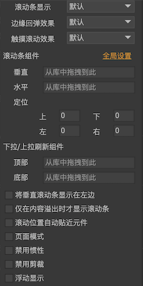

滚动容器
滚动属性
对组件或者列表设置了“溢出处理”为“水平滚动”、“垂直滚动”，“自由滚动”后，组件或者列表即成为滚动容器。点击“溢出处理”旁边的 按钮，可以设置详细的滚动的相关属性。
按钮，可以设置详细的滚动的相关属性。

滚动条显示滚动条的显示策略。默认使用全局设置，编辑器在主菜单“文件->项目属性->预览设置”里设置，运行时则需要通过UIConfig.defaultScrollBarDisplay设置。可见表示滚动条一直显示。滚动时显示表示滚动条只有在滚动时才会显示，或者鼠标移入滚动区域时显示（PC上），其他情况下自动隐藏。隐藏表示滚动条一直不可见的状态。
边缘回弹效果滚动到达边缘时是否允许继续滑动/拖动一定距离，表现一个回弹的效果。一般在移动平台上使用，PC上较少。有些开发者会提出为什么我的滚动容器里内容没超出视口，却依然能滚动，这其实是边缘回弹效果。触摸滚动效果是否允许用户直接拖拽滚动区域内的内容。一般在移动平台上使用，PC上较少，PC上一般需要拖动滚动条，或使用鼠标滚轮。滚动条组件设置滚动条资源。一般不需要设置，全局有一个设置，在主菜单“文件->项目属性->默认值”里。如果你要使用不同于全局设置的滚动条资源，那么在这里设置。定位可以设置滚动条在容器中的位置，这是一个相对于正常位置的偏移值。下拉/上拉刷新组件设置上拉刷新或下拉刷新时需要显示的组件。下面是下拉刷新的效果：
将垂直滚动条显示在左边设置垂直滚动条显示在容器的左边，而不是在容器的右边。仅在内容溢出时才显示滚动条只有当容器内的内容超出视口区域时，才显示滚动条，否则隐藏。注意：即使是不显示，滚动条还是有预留的占位的，这个和“滚动条显示”设置为“隐藏”不相同，后者是完全取消滚动条的占位的。滚动位置自动贴近元件在滚动结束后，保证滚动位置刚好处于任意元件的上边缘（或左边缘）。页面模式以视口大小为页面大小，每次滚动的距离是一页。一般在移动平台上使用，PC上较少，拖动滚动条进行滚动操作与这个模式冲突。禁用惯性当用手拖拽内容一段距离，并释放手指后，系统会根据手指移动的速度计算出一个速率，然后滚动会按照将此速率衰减到零的方式慢慢停下来，这称为惯性滚动。如果不需要此特性，可以关闭。这个功能是和“触摸滚动效果”配合使用的。禁用剪裁一般情况下，容器会对超出视口的内容进行剪裁。特殊情况下，例如，如果一个列表的item组件自身就是滚动容器，那么item组件可以关闭剪裁。因为大量的剪裁会消耗很多的系统性能。禁用裁剪边缘一般情况下，视口不包括边缘设置的部分，也即是容器设置四周的留空部分也会被裁剪。如果需要，可以勾选这个选项，使容器四周的留空部分不被裁剪。浮动显示勾选后，滚动条不占据视口的位置，而是直接覆盖在视口上面。例如一个适用于手机的滚动条，它是细条且半透明的，只在滚动时才显示出来，用于提示滚动位置。那么我们把它设置为“浮动”，这样就不会挤占视口的显示空间。
ScrollPane
当组件的“溢出处理”设置为“滚动”后，可以通过GComponent.scrollPane使用滚动相关的功能，例如：
ScrollPane scrollPane = aComponent.scrollPane; |
当你增删子组件后，或者移动子组件的位置、调整子组件的大小，容器是自动更新滚动区域的，不需要调用任何API。这个刷新发生在本帧绘制之前。如果你希望立刻访问子元件的正确坐标，那么可以调用EnsureBoundsCorrect通知GComponent立刻重排。EnsureBoundsCorrect是一个友好的函数，你不用担心重复调用会有额外性能消耗。
ScrollPane中常用的API有：
viewWidthviewHeight视口宽度和高度。contentWidthcontentHeight内容高度和宽度。percXpercYSetPercXSetPercY获得或设置滚动的位置，以百分比来计算，取值范围是0-1。如果希望滚动条从当前值到设置值有一个动态变化的过程，可以使用Set方法，它们提供了一个是否使用缓动的参数。posXposYSetPosXSetPosY获得或设置滚动的位置，以绝对像素值来计算。取值范围是0-最大滚动距离。垂直最大滚动距离=（内容高度-视口高度），水平最大滚动距离=（内容宽度-视口宽度）。如果希望滚动条从当前值到设置值有一个动态变化的过程，可以使用Set方法，它们提供了一个是否使用缓动的参数。currentPageXcurrentPageYsetCurrentPageXsetCurrentPageY如果滚动设置为页面模式，那么可以通过这些方法设置或者获得当前的页面索引。如果要获得页面数量，可以用contentWidth/viewWidth或者contentHeight/viewHeight。ScrollLeftScrollRightScrollUpScrollDown向指定方向滚动N*scrollStep。例如，如果scrollStep=20，那么ScrollLeft(1)表示向左滚动20像素，ScrollLeft(2)表示向左滚动40像素。注意：如果滚动属性设置了贴近元件，例如元件大小为41像素，则需要滚动距离超过20像素，才能真正发生滚动，那么如果调用ScrollLeft(1)，在scrollStep=20的情况下，会导致看不到任何效果。
如果滚动设置为页面模式，那这几个API也有“翻一页”的作用。ScrollToView调整滚动位置，使指定的元件出现在视口内。touchEffect打开或关闭触摸滚动功能。关闭触摸滚动后，用户就不能拖拽视口进行滚动了。这个功能可以在编辑器里设置，如果编辑器里设置的是“默认”，则使用UIConfig.defaultScrollTouchEffect。scrollStep这个值是指滚动“一格”的距离。这个距离有三个用途：a）scrollUp/scrollDown/scrollLeft/scrollRight； b）点击滚动条的箭头按钮； c）鼠标滚轮，鼠标滚轮滚一次的距离是scrollStep*2。bounceBackEffect可以打开或关闭边缘回弹功能。这个功能可以在编辑器里设置，如果编辑器设置的是“默认”，则使用UIConfig.defaultScrollBounceEffect。mouseWheelEnabled打开或关闭鼠标滚动支持。decelerationRate减速率，调整这个值可以控制惯性滚动的距离和时间。惯性滚动是指手指拖动一定距离然后释放后，滚动容器内容继续滚动一定距离后停止。越接近1，减速越慢，意味着滑动的时间和距离更长。默认值是UIConfig.defaultScrollDecelerationRate。CancelDragging当滚动面板处于拖拽滚动状态或即将进入拖拽状态时，可以调用此方法停止或禁止本次拖拽。
可以侦听滚动改变，在任何情况下滚动位置改变都会触发这个事件。
//Unity/Cry |
和滚动相关的事件还有：
ScrollEnd惯性滚动结束后回调。PullDownRelease下拉刷新回调。PullUpRelease上拉刷新回调。
//Unity/Cry |